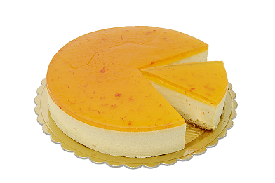

Mousse de Laranja
Ingredientes
- 1 lata de leite moça
- 1 lata de creme de leite
- 1/2 xícara de suco de laranja (não acrescente água)
- 1 colher de sopa rasa de suco de limão (não acrescente água)
Modo de Preparo
- No liquidificador adicione o leite moça e o creme de leite
- Bata por 1 minuto em velocidade baixa para misturar
- Acrescente o suco de laranja com limão e bata por mais 1 minuto em velocidade baixa
- Despeje em recipiente de sua escolha e leve à geladeira